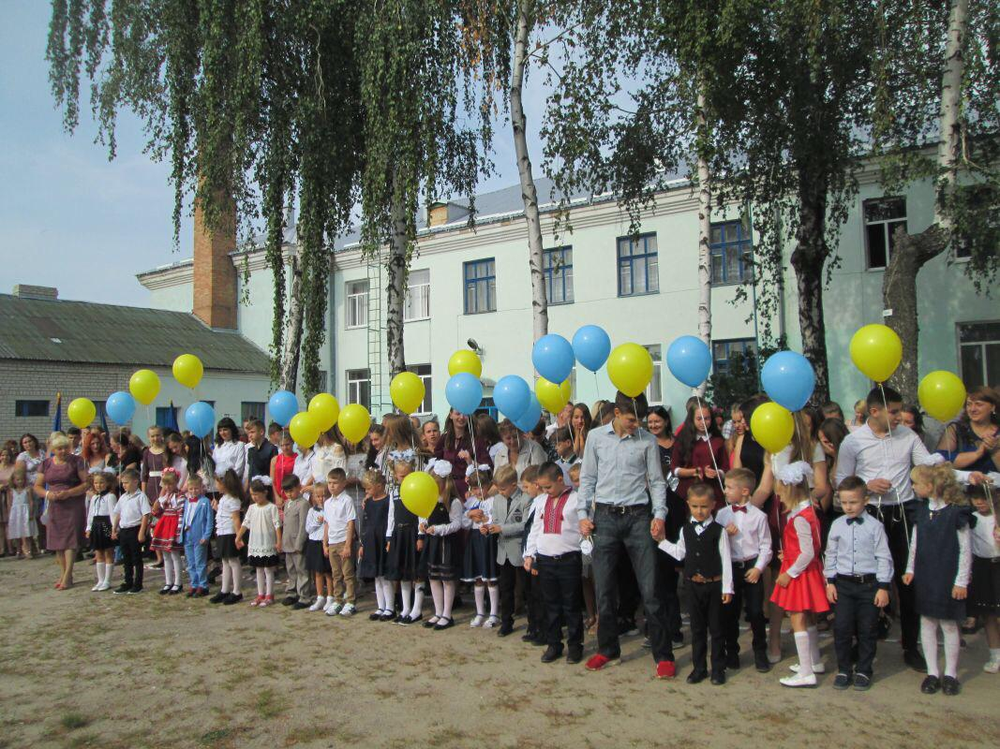

Я розповім вам про свою школу. Моя школа - не нова і не сучасна, і вона мені не дуже подобається. У неї два поверхи. Класи світлі але не просторні. Є класи для різних предметів, таких як англійська мова, історія, фізика, математика, хімія, географія, біологія, література і т.д.Але розрізняють їх тільки плакати . Звичайно у нас є класи де зроблений ремон але зазвичай ці ласи для молодших класів . Хоча вона находится в центрі міста але сучасною її назвати не можна.
В нашій школоі не сама найкраща репутація ,багато хто переходить в 5 школу щоб бити байдики. У нашій школі є комп'ютерний клас. Тут ми вивчаємо інформатику. У нашому комп'ютерному класі - не сучасне обладнання, і є доступ до Інтернету.Але нас сказали що проблему з обладнанням вирішать . У нашій школі є також актова зала(спротзал), який розташований на другому поверсі. Тут проходять збори, конференції, концерти і всі свята. Ми співаємо пісні, читаємо вірші, танцюємо і беремо участь в невеликих театральних постановках. У нашій школі викладають дуже кваліфіковані вчителі. Вони прагнуть передати нам всі свої знання і пробудити цікавість до своїх предметів і до самоосвіти. Вчителі не лише викладають нам шкільні предмети, але і розповідають про все, про різні світові проблеми, такі як екологія, охорона природи, кліматичні зміни тощо. Я вважаю, що шкільні роки дуже важливі для кожної людини. Це період дорослішання, набуття знань і вибору життєвого шляху. Дуже часто шкільні друзі залишаються вашими друзями на все життя. Тому я ніколи не забуду мою школу, вчителів і однокласників